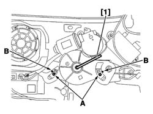
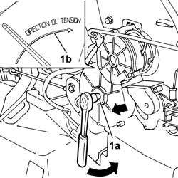
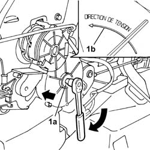

7020D67 ROD FOR LEFT OR RIGHT MOTORIZED SLIDING SIDE DOOR OPENING/CLOSING DEVICE - ADJUSTMENT
- Path
- Procedures > 70 FITTINGS > 7020 LOAD COMPARTMENT DOORS > 7020D SLIDING SIDE DOOR CLOSURE DEVICES > 7020D67 ROD FOR LEFT OR RIGHT MOTORIZED SLIDING SIDE DOOR OPENING/CLOSING DEVICE - ADJUSTMENT
- Kind
- repair procedure (removal / refitting; the operation number is the code)
- Applies to
- all engines; all production periods
- Interactive page
- https://sloeber94.github.io/elrnDB-fUlss/en/#/179007737
Applies to: all engines; all production periods
 Removing
Removing
 Refitting
RefittingOp. 5530B56 BATTERY DRIP TRAY COVER - R.R.
-
Op. 7040H42 REAR PILLAR TRIM (ONE), LEFT OR RIGHT- R.R
Op. 7040H50 REAR PANEL (ONE), LEFT OR RIGHT - R.R
Op. 7040B22 LUGGAGE COMPARTMENT/LOAD PLATFORM MOULDING - R+R
Op. 5010C08 VENT IN LUGGAGE COMPARTMENT/LOAD CARRYING PLATFORM SIDE TRIM - R.R.
Op. 7040B13 LOAD COMPARTMENT/LOAD PLATFORM RIGHT SIDE TRIM - R R
- Disconnect the negative battery terminal.
-
-

Applies to: all engines; all production periods
- In order to loosen the cables, PULL the hub (1a) for the device in the direction shown and, at the same time, rotate it in the OPPOSITE direction to the tensioning direction (1b).

Applies to: all engines; all production periods
-LOOSENING LEFT SIDE
- In order to loosen the cables, PUSH the hub (1a) for the device in the direction shown and, at the same time, rotate it in the OPPOSITE direction to the tensioning direction (1b).

Applies to: all engines; all production periods
Op. 7040B13 LOAD COMPARTMENT/LOAD PLATFORM RIGHT SIDE TRIM - R R
Op. 5010C08 VENT IN LUGGAGE COMPARTMENT/LOAD CARRYING PLATFORM SIDE TRIM - R.R.
Op. 7040B22 LUGGAGE COMPARTMENT/LOAD PLATFORM MOULDING - R+R
Op. 7040H50 REAR PANEL (ONE), LEFT OR RIGHT - R.R
Op. 7040H42 REAR PILLAR TRIM (ONE), LEFT OR RIGHT- R.R
- Connect the negative battery terminal.
Op. 5530B56 BATTERY DRIP TRAY COVER - R.R.
- Proceed with the initialization of the electrical components involved in the operation as described in the Descriptions and operation chapter Subassembly 5505A.
Topics linked from this page (6)
- 5010C08 VENT IN LUGGAGE COMPARTMENT/LOAD CARRYING PLATFORM SIDE TRIM - R.R.
- 5530B56 BATTERY DRIP TRAY COVER - R.R.
- 7040B13 LOAD COMPARTMENT/LOAD PLATFORM RIGHT SIDE TRIM - R R
- 7040B22 LUGGAGE COMPARTMENT/LOAD PLATFORM MOULDING - R+R
- 7040H42 REAR PILLAR TRIM - R R
- 7040H50 REAR PANEL - R R